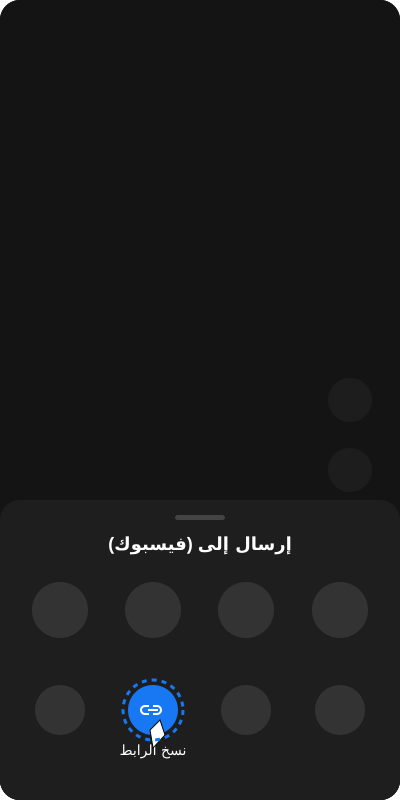

كيف تحمل مقاطع فيديو من فيسبوك باستخدام HubSave
فيسبوك يحتوي على ملايين الفيديوهات يومياً. لكن لا يوفر خيار تحميل مباشر. سنوضح لك كيف تحمل أي فيديو من فيسبوك بجودة عالية باستخدام HubSave.
خطوات نسخ رابط الفيديو من فيسبوك
افتح تطبيق فيسبوك
افتح Facebook على هاتفك وابحث عن الفيديو. تأكد أنه خاص بك أو حصلت على إذن من صاحبه.
اضغط على "مشاركة"
اضغط على زر "مشاركة" (Share) أسفل الفيديو. ستظهر قائمة خيارات.
انسخ الرابط
اختر "نسخ الرابط" (Copy Link). إذا لم تجده، اضغط على النقاط الثلاث (⋯) واختر "نسخ الرابط".

خطوات التحميل من HubSave
افتح HubSave
افتح التطبيق وسيتم لصق الرابط تلقائياً.

فحص وتحميل
اضغط "فحص الرابط"، ثم اختر تحميل الفيديو بجودة HD أو تحميل الصوت MP3.

شاهد من السجل
اذهب لتبويب "السجل" لمشاهدة الفيديو أو إضافته للمفضلة.
ملاحظات عن فيسبوك
- الفيديوهات الخاصة ("أصدقاء فقط") قد لا تكون متاحة للتحميل
- فيديوهات البث المباشر قد لا تعمل أثناء البث
- استخدم رابط الفيديو المباشر وليس رابط الصفحة
⚠️ إخلاء المسؤولية — الاستخدام الشخصي فقط
تطبيق HubSave مصمم حصرياً لتحميل الفيديوهات الخاصة بك فقط أو التي حصلت على إذن صريح من صاحب المحتوى.
نحن لا نشجع انتهاك حقوق الطبع والنشر. أنت تتحمل المسؤولية القانونية الكاملة عن أي محتوى تحمله.
يجب الحصول على إذن من صاحب المحتوى الأصلي. المطور غير مسؤول عن أي استخدام خاطئ.